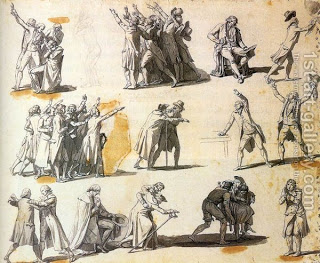

Shevuot (Oaths) 27 - An Oath to Violate a Mitzvah
If one swears to violate a mitzvah but does not violate it - he is not liable for an oath of utterance and a sacrifice. In the same way, if he swears to fulfill a mitzvah and does not do it, he is exempt. Oaths only apply to something that he has freedom to do or not to do, and not to mitzvot, which one is obligated to do from the time of Mount Sinai. However, in the first case he is liable to lashes for making a vain oath.
Rabbi Yehudah ben Beteira wants to prove that one who swears to do a mitzvah and does not do it is liable, as follows. If in the case of an oath to do an optional act one is liable for not doing it, then in the case of a mitzvah, which he is already obligated to do, how much more so is he liable if he does not do it!
But the Sages say, oaths are only created if one has freedom to promise to do or not to do, and in the case of mitzvot one does not have this freedom.
Art; Jacques Louis David - Deputies swearing oaths